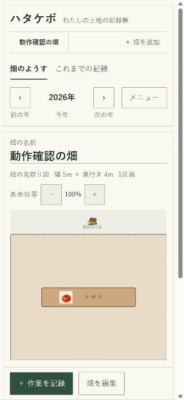

畝の幅を決めて、レイアウトを考える
畑の大きさや形を登録し、畝の向き・幅・位置を指定できます。通路も考えながら、どこに野菜を植えるかを図で整理。周囲の目印には名前を付けられます。
家庭菜園・市民農園の土地の記録帳
畑の記録に、必要なことだけ。
ハタケボは、家庭菜園・市民農園の畑や畝のレイアウトを作り、植えた野菜と作業を記録できる無料のWebアプリです。
初めての方にもわかりやすく、機能と操作を絞った、あなたの畑専用の記録帳です。
スマートフォンでも、パソコンでも。
事前の準備ができれば、電波のない畑でも使えます。

去年のトマト。春に入れた堆肥。
畑で重ねた小さな仕事を、次の季節に手渡す。
ハタケボは、そんな日々のための道具です。
畑で役立つ、4つのこと
畑の大きさや形を登録し、畝の向き・幅・位置を指定できます。通路も考えながら、どこに野菜を植えるかを図で整理。周囲の目印には名前を付けられます。
畝ごとに野菜と植え付け日を記録できます。年を切り替えれば以前の作付けを振り返れるので、次の作付け計画を考えるときにも役立ちます。
野菜だけでなく、土に入れたものや作業も日付とともに残せます。畝ごと、または畑全体の記録として整理し、追肥や土づくりの履歴を見返せます。
畑の図と作付け一覧を印刷できます。畑の大きさ・面積も併記するため、紙の記録として残したり、農園で相談するときにも使えます。

ひと目でわかる、畑の見取り図
「どの畝だったかな？」と迷ったら、図を見て確認。畝を選ぶと、植えた野菜や作業の記録を見返せます。
スマートフォンでもパソコンでも、同じ記録の仕方。文字を大きくする設定も用意しています。
自分の畑を作ってみる ↗こんな使い方に
ハタケボは、自分で配置を考え、残したいことを記録する道具です。育て方や最適な配置を自動で提案する機能、天気予報、利用者同士の交流機能はありません。畑の記録は使っているブラウザー内に保存され、端末間の自動同期はありません。
はじめの一歩
記録するのは、残しておきたいことだけ。
誰かに見せるためではなく、次に畑に立つ自分のための記録帳です。
畑へ持っていく前に
出かける前に、通信できる場所でハタケボを開き、画面に「電波のない場所でも使えます」と表示されることを確認してください。準備ができれば、同じ端末・同じブラウザーで、畑の閲覧や記録ができます。
記録は使っているブラウザー内に保存されます。別の端末への自動同期はありません。端末の故障やブラウザーのデータ消去に備え、メニューからバックアップを保存しておくと安心です。
使う前に、知っておきたいこと
はい。畑の寸法・形を設定し、畝と通路を配置できます。配置図の印刷、野菜や作業の記録も無料で、会員登録・インストールは不要です。実際の画面で使い方を見る。
はい。新しい畑の各辺は50cm〜15m、25cm刻みで設定できます。四角くない畑は、全体が収まる長方形を作り、使わないマスを外して形を近づけます。細かな曲線を正確に描く測量用の道具ではありません。
はい。スマートフォンと同じように、畝の向き・幅・位置を指定できます。ドラッグ操作だけで作る必要はありません。
記録した作物の科や過去の作付けをもとに、連作を考えるための注意を表示します。病害の発生を予測したり、防止を保証するものではありません。畑の状態や地域の栽培情報と合わせて参考にしてください。
古い端末でバックアップを保存し、新しい端末のハタケボで読み込むことで引き継げます。ブラウザーのデータを消す前や、買い替え前に保存してください。
アプリ内の「よくある質問」で、畝の作成、作業の記録、印刷やバックアップなどを確認できます。